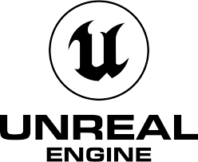

Cosa è un Engine
Il motore grafico è il nucleo software di un videogioco o di qualsiasi altra applicazione con grafica in tempo reale. Esso fornisce le tecnologie di base, semplifica lo sviluppo, e spesso permette al gioco di funzionare su piattaforme differenti come le console o sistemi operativi per personal computer. La funzionalità di base fornita tipicamente da un motore grafico include un motore di rendering ("renderer") per grafica 2D e 3D, un motore fisico o rilevatore di collisioni, suono, scripting, animazioni, intelligenza artificiale, networking, e scene-graph.
I motori grafici più popolari al momento sono:
|  | ||
| Unreal Engine è un motore grafico sviluppato da Epic Games. La prima versione è stata realizzata per lo sparatutto in prima persona Unreal, pubblicato nel 1998 per Microsoft Windows, Linux e Mac OS; nel corso degli anni lo sviluppo è continuato, adattando il software alle potenzialità degli hardware disponibili e portandolo ad altre piattaforme. | Unity è un motore grafico multipiattaforma sviluppato da Unity Technologies che consente lo sviluppo di videogiochi e altri contenuti interattivi. | Godot è un motore di gioco multipiattaforma , gratuito e open source rilasciato sotto la permissiva licenza MIT. L'ambiente di sviluppo funziona su molte piattaforme e può essere esportato su molte altre. È progettato per creare giochi 2D e 3D destinati a PC , dispositivi mobili e piattaforme Web e può essere utilizzato anche per sviluppare software non di gioco, inclusi gli editor. |
| Linguaggi di programmazione | ||
| Unreal Engine usa, invece, il linguaggio di programmazione C++ | il C# viene utilizzato per la programmazione di Unity. | Godot Engine utilizza un linguaggio di scripting chiamato GDScript, che è simile a Python ma ottimizzato per i videogiochi, e C# |